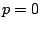
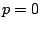

Next: About this document ...
Solution of high-order discontinuous Galerkin methods using
a combined H-P multigrid approach
Dimitri Mavriplis
Dept. of Mechanical Engineering, Dept 3295
University of Wyoming, 1000E. University Ave., Laramie WY 82071
mavripl@uwyo.edu
Cris Nastase, Li Wang
The development of optimal, or near optimal solution
strategies for higher-order discretizations, including
steady-state solutions methodologies, and implicit time
integration strategies, remains one of the key determining
factors in devising higher-order methods which are not just
competitive but superior to lower-order methods in overall
accuracy and efficiency. The goal of this work is to
investigate and develop a fast and robust algorithm for the
solution of high-order accurate discontinuous Galerkin
discretizations of non-linear systems of conservation laws
on unstructured grids.
We develop a spectral multigrid
method, whereby the coarse ``grid'' levels are constructed by
reducing the order ( ) of approximation of the
discretization using hierarchical basis
functions(-multigrid), keeping the grid elements fixed.
This approach is coupled with a traditional agglomeration
multigrid (
) of approximation of the
discretization using hierarchical basis
functions(-multigrid), keeping the grid elements fixed.
This approach is coupled with a traditional agglomeration
multigrid ( -multigrid) approach for unstructured grids,
by constructing additional coarse levels at the lowest
() spectral level through element agglomeration. The
overall goal is the development of a solution algorithm
which delivers convergence rates which are independent of
``'' (the order of accuracy of the discretization) and
independent of ``'' (the degree of mesh resolution), while
minimizing the cost of each iteration. The investigation of
efficient smoothers to be used at each level of the
multigrid algorithm is also pursued, and comparisons between
different integration strategies are made as well.
-multigrid) approach for unstructured grids,
by constructing additional coarse levels at the lowest
() spectral level through element agglomeration. The
overall goal is the development of a solution algorithm
which delivers convergence rates which are independent of
``'' (the order of accuracy of the discretization) and
independent of ``'' (the degree of mesh resolution), while
minimizing the cost of each iteration. The investigation of
efficient smoothers to be used at each level of the
multigrid algorithm is also pursued, and comparisons between
different integration strategies are made as well.
Next: About this document ...
Bruce Fast
2006-03-11